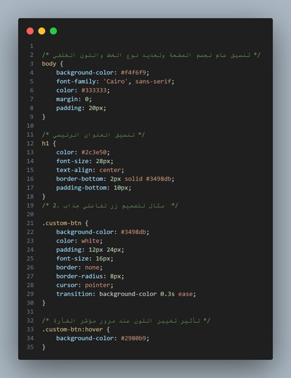

اسم الطالبة: بسملة إبراهيم حسنين أبو المجد البشوتي
الرقم الجامعي: 2502327
تعد شبكة الويب العالمية (World Wide Web) من أهم الابتكارات التكنولوجية التي رسمت ملامح العصر الرقمي الحديث. وفي بدايات نشأتها خلال تسعينيات القرن الماضي، كانت الصفحات تتكون بشكل أساسي من نصوص وروابط تشعبية بسيطة تُعرف بالصفحات الثابتة (Static Web Pages)، حيث اقتصر دور لغة الهيكل HTML على بناء المحتوى الخام دون أي عناية بالتصميم أو التنسيق الجمالي.
مع التطور المتسارع للتكنولوجيا والاحتياج إلى منصات أكثر جاذبية واحترافية تلبي تطلعات المستخدمين، ظهرت الحاجة الملحة لفصل بنية المستند عن تصميمه البصري. ومن هنا ولدت لغة تنسيق الصفحات المتتالية CSS (Cascading Style Sheets) لتصبح الركيزة الثانية والأساسية لتطوير الويب إلى جانب لغتي HTML وJavaScript.
تهدف هذه الدراسة المصغرة إلى تسليط الضوء على الدور المحوري الذي تلعبه لغة CSS في تحسين تجربة المستخدم (UX) وواجهات الاستخدام (UI) عبر التحكم الدقيق في ألوان وخطوط وتخطيط صفحات الويب. سنتناول في هذا التقرير كيفية تطبيق أنماط CSS، وأهم خصائصها في التنسيق الجمالي، بالإضافة إلى استعراض أمثلة عملية توضح كيفية تغيير مظهر العناصر بكل مرونة وسهولة.
تمنح لغة CSS المطورين سيطرة كاملة على المظهر البصري لصفحات الويب، مما يتيح توفير بيئة مريحة وجميلة للمستخدمين من خلال عدة جوانب رئيسية:
تتيح CSS تحديد ألوان النصوص والحدود والخلفيات باستخدام درجات الألوان المختلفة مثل Hex وRGB وHSL، مما يساعد في تحقيق تباين بصري ممتاز يسهل قراءة المحتوى ويدعم أنماط العرض المختلفة مثل الوضع الداكن (Dark Mode).
توفر CSS التحكم الكامل في نوع الخط (Font Family)، وحجمه (Font Size)، وسمكه (Font Weight)، والمسافات بين السطور والكلمات، مما يضفي طابعاً احترافياً ومميزاً للهوية البصرية للموقع.
تتيح إضافة خلفيات ملونة أو صور متجاورة، والتحكم في تمريرها وتوسيط العناصر وترتيبها بمرونة فائقة باستخدام تقنيات حديثة مثل Flexbox وGrid.
| وجه المقارنة | المواقع بدون CSS (HTML خام) | المواقع المنسقة باستخدام CSS |
|---|---|---|
| المظهر العام | نص تقليدي أسود على خلفية بيضاء ورابط أزرق تقليدي | تصميم بصري متكامل، ألوان متناسقة وهوية بصرية واضحة |
| الخطوط والنصوص | خطوط افتراضية ثابتة وغير قابلة للتخصيص المريح | خطوط احترافية ومتجاوبة مع كافة الشاشات وأحجامها |
| تجربة التخطيط | هياكل عمودية صلبة وغير مرتبة بصرياً | تخطيطات مرنة ومتجاوبة (Responsive Design) مع الهواتف الذكية |
| تفاعل المستخدم | تجربة مستخدم ضعيفة وتقليدية للغاية | تجربة مستخدم (UX) جذابة ومريحة للعين تشبه التطبيقات الحديثة |
تتعدد استخدامات لغة CSS في تصميم الواجهات، وفيما يلي مثال مبسط يوضح كيفية كتابة وتطبيق قواعد التنسيق على عناصر صفحة الويب:
تتيح هذه الخصائص البسيطة تحويل الأزرار والعناصر العادية إلى عناصر تفاعلية مريحة بصرياً تلفت انتباه المستخدم وتشجعه على التفاعل مع المنصة.

في ختام هذا التقرير البحثي، يتضح لنا جلياً أن لغة تنسيق الهيئة CSS تمثل حجر الأساس في صناعة الجمال البصري لشبكة الويب. إن قدرتها على فصل محتوى الصفحة (HTML) عن مظهرها الخارجي سهلت كثيراً من عمليات تطوير الصيانة البرمجية، وسمحت بتصميم واجهات متجاوبة تعمل بكفاءة عالية على مختلف الأجهزة الذكية والشاشات.